특징 추출
convolution에 대한 세부 내용에 들어가기 전에, 이러한 층들이 네트워크에서 어떤 목적을 가지고 있는지 논의해 보겠습니다. 우리는 이 세 가지 연산(합성곱, ReLU, 최대 풀링)이 특징 추출 과정을 어떻게 구현하는지 살펴볼 것입니다.
Base에서 수행되는 특징 추출은 세 가지 기본 연산으로 구성됩니다:
1. 특정 특징에 대해 이미지를 필터링합니다(Convolution)
2. 필터링된 이미지 내에서 해당 특징을 탐지합니다(Activation)
3. 이미지를 압축하여 특징을 강화합니다(Max Pooling)
다음 그림은 이 과정을 설명합니다. 이 세 가지 연산이 어떻게 원본 이미지의 특정 특징(이 경우, 수평선)을 분리하는 데 도움이 되는지 볼 수 있습니다.
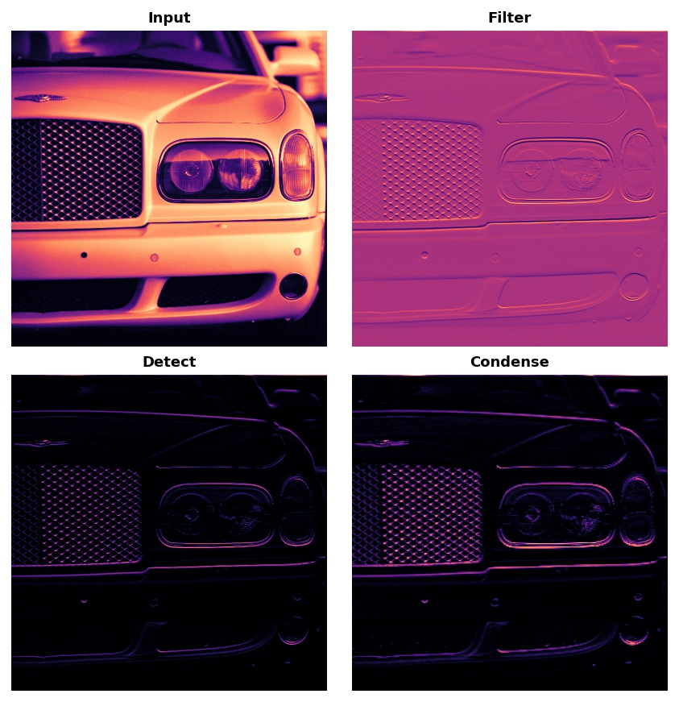
Convolution
Convolution layer는 필터링 과정을 수행합니다. Keras에서는 다음과 같이 수행됩니다.
from tensorflow import keras
from tensorflow.keras import layers
model = keras.Sequential([
layers.Conv2D(filters=64, kernel_size=3), # activation is None
# More layers follow
])학습 도중 합성곱 네트워크가 배우는 Weights를 우리는 Kernel이라고 부릅니다. 우리는 이것들을 작은 배열로 표현할 수 있습니다:
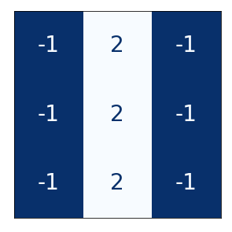
커널은 이미지 위를 스캔하고 픽셀 값의 가중치 합을 생성함으로써 작동합니다. 이런 방식으로, 커널은 어떤 정보 패턴을 강조하거나 약화하는 광학 렌즈와 같은 역할을 합니다.
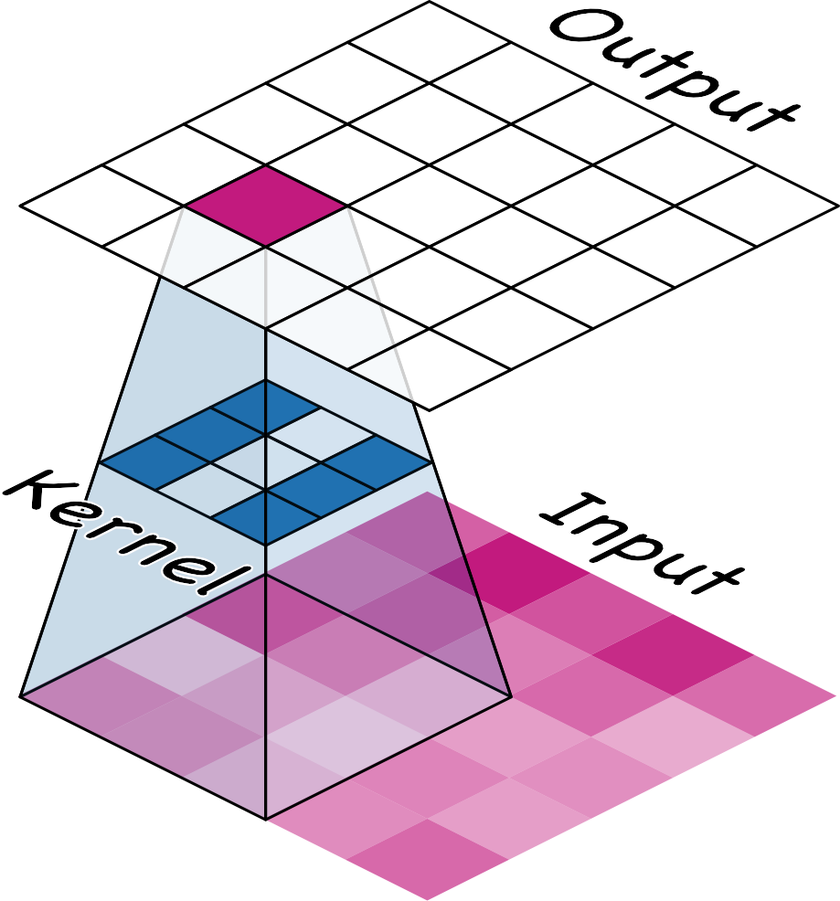
커널은 합성곱 층이 다음 층에 어떻게 연결되는지를 정의합니다. 위의 커널은 출력의 각 뉴런을 입력의 아홉 개의 뉴런에 연결할 것입니다. kernel_size로 커널의 차원을 설정함으로써, 합성곱 네트워크가 이러한 연결을 어떻게 형성할지 알려줍니다. 대부분의 경우 커널은 kernel_size=(3, 3)나 (5, 5)와 같이 홀수 차원을 가집니다 – 그래서 중심에 하나의 픽셀이 위치하게 되지만, 이는 필수 요건은 아닙니다.
합성곱 층의 커널은 그것이 어떤 종류의 특징을 생성하는지 결정합니다. 학습 중에, 합성곱 네트워크는 분류 문제를 해결하기 위해 필요한 특징이 무엇인지를 배우려고 합니다. 이는 커널의 최적의 값을 찾는 것을 의미합니다.
네트워크의 활성화를 우리는 특징 맵(feature maps)이라고 부릅니다. 이들은 이미지에 필터를 적용했을 때 결과로 나타납니다; 그것들은 커널이 추출하는 시각적 특징을 포함합니다. 다음은 몇 가지 커널과 그것들이 생성한 특징 맵의 사진입니다.
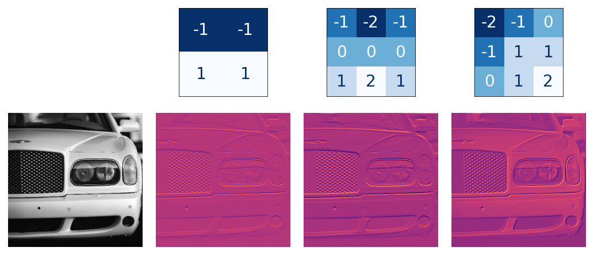
Activation
필터링 후, 특징 맵은 Activation 함수를 통과합니다. ReLU는 이런 모양의 그래프를 가지고 있습니다:
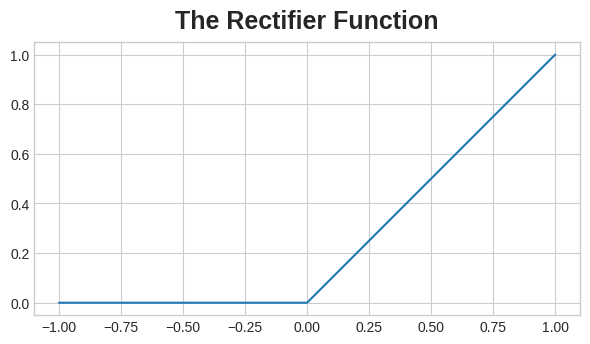
Relu함수는 Keras에서 다음과 같이 사용됩니다.
model = keras.Sequential([
layers.Conv2D(filters=64, kernel_size=3, activation='relu')
# More layers follow
])활성화 함수를 중요도에 따라 픽셀 값에 점수를 매기는 것으로 생각할 수 있습니다. ReLU 활성화는 음수 값이 중요하지 않다고 판단하여 그것들을 0으로 설정합니다.
다음은 위의 특징 맵에 적용된 ReLU입니다.
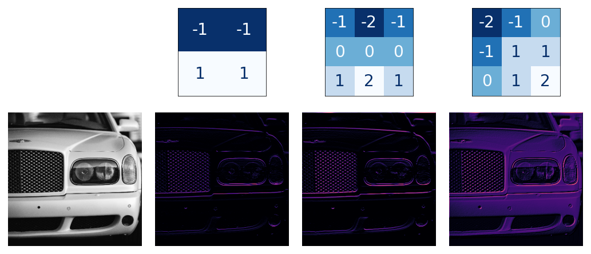
다른 활성화 함수와 마찬가지로, ReLU 함수는 비선형입니다. 비선형성은 특징들이 네트워크 안쪽으로 깊게 이동하면서 흥미로운 방식으로 결합하도록 보장합니다.
이제 마지막 단계인 Max Pooling을 활용한 압축에 대해 알아보겠습니다.
Max Pooling
Max Pooling은 Keras에서 다음과 같이 적용합니다.
from tensorflow import keras
from tensorflow.keras import layers
model = keras.Sequential([
layers.Conv2D(filters=64, kernel_size=3), # activation is None
layers.MaxPool2D(pool_size=2),
# More layers follow
])MaxPool2D는 Conv2D와 매우 유사하게 작동하나, 합성곱할 weights가 없는 대신에, 주어진 구간에서 최대인 값을 추출합니다. Relu가 적용된 이미지에서 필요 없는 부분을0으로 만들었던 것을 기억할 것입니다. Max Pooling에서는 이 필요하지 않는 부분을 아예 제외함으로써 모델의 크기를 줄여줄 수 있습니다.
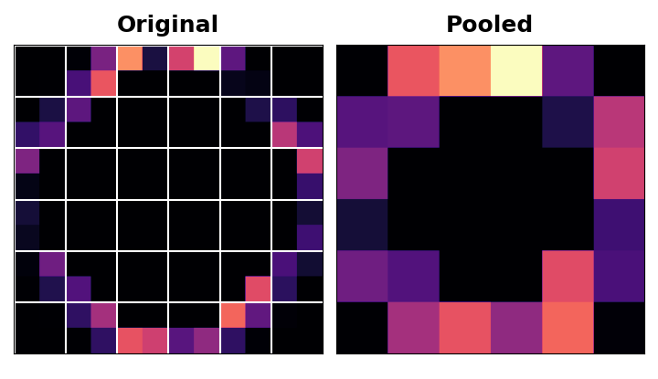
Example
이제 이미지를 Convolution-Activation-Max Pooling 모두 적용해보도록 하겠습니다.
다음은 이 예시에 사용할 이미지입니다:
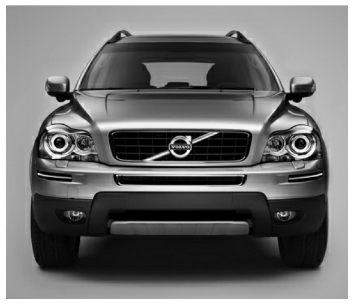
Filtering을 위해, 커널을 정의하고 적용해보겠습니다.
이번 예시에서 적용할 커널은 “edge detection” 커널입니다.
import tensorflow as tf
kernel = tf.constant([
[-1, -1, -1],
[-1, 8, -1],
[-1, -1, -1],
])
plt.figure(figsize=(3, 3))
show_kernel(kernel)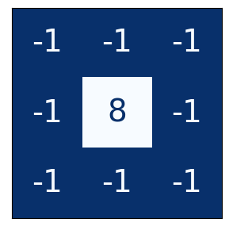
이제 이 커널을 이미지에 적용해보겠습니다.
image_filter = tf.nn.conv2d(
input=image,
filters=kernel,
strides=1,
padding='SAME',
)
plt.figure(figsize=(6, 6))
plt.imshow(tf.squeeze(image_filter))
plt.axis('off')
plt.show();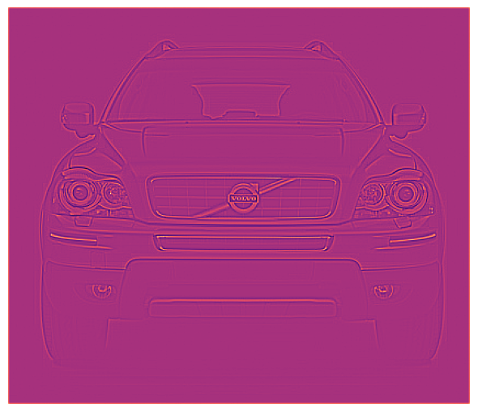
이제 ReLu를 적용해보겠습니다.
image_detect = tf.nn.relu(image_filter)
plt.figure(figsize=(6, 6))
plt.imshow(tf.squeeze(image_detect))
plt.axis('off')
plt.show();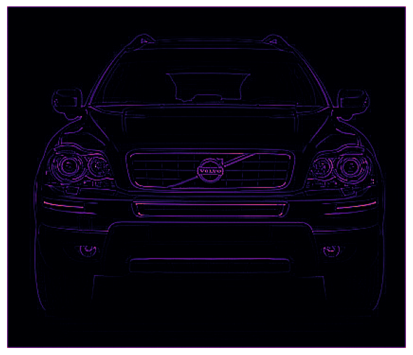
이제 MaxPooling을 적용해보겠습니다.
import tensorflow as tf
image_condense = tf.nn.pool(
input=image_detect, # image in the Detect step above
window_shape=(2, 2),
pooling_type='MAX',
# we'll see what these do in the next lesson!
strides=(2, 2),
padding='SAME',
)
plt.figure(figsize=(6, 6))
plt.imshow(tf.squeeze(image_condense))
plt.axis('off')
plt.show();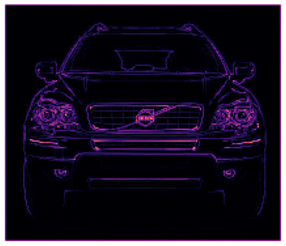